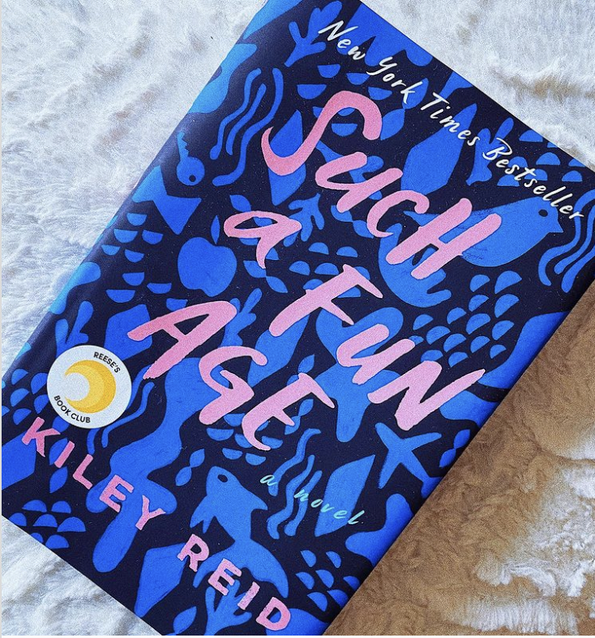

I thought it would be appropriate to start off this account with the first book I read during quarantine. I picked up this book on the day my school officially let out and I was in desperate need of a distraction. Luckily this story was exactly that! I started it around nine and literally didn’t go to bed until I finished because I couldn’t put it down. What is so special about this story is how relevant and CURRENT it is (it was published in late 2019, so all the cultural references are easy to spot). Without giving too much away, the story is essentially about the relationship between Alix, a wealthy, white suburban woman who has made a career of blogging, and her young black babysitter Emira. The relationship begins to shift after Emira is involved in a bias-related incident at an affluent grocery store, while caring for Alix’s toddler. This story tackles important conversations like the difficulty of transactional relationships (especially when race is involved), privilege, and finding your place as a young person, all while being an incredibly enjoyable and mostly light-hearted read. It’s also a member of Reese’s Book Club, and it if it’s good enough for Reese Witherspoon, it’s good enough for me. (Also ironically enough, Reese’s character in Little Fires Everywhere is super similar to Alix- if you binge watched her new Hulu series as quickly as I did, then you’ll love this book too.) Happy reading, and let me know if you pick this book up!.